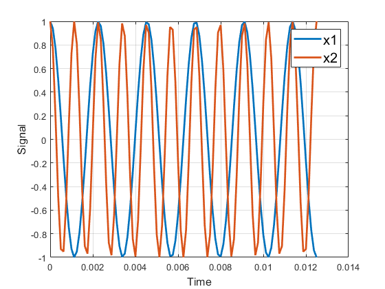

% ECE 313: Tune-Up #1 % Last edit by: Quan Vo @ 5:30 PM 8/29/2023 clc close all % You should be able to copy-and-paste this page into Matlab and execute it. % Please complete each section below. % Please include your Matlab code as well as any answers to the questions as % MATLAB comments in the full answer that you submit on Canvas. % (a) Copy, paste and run the Matlab code from slide 1-16 to generate a cosine signal % at frequency 440 Hz to play it as an audio signal at a sampling rate of 8000 Hz: f0 = 440; % 440 Hz (A in 4th octave, or A4) fs = 8000; % sampling rate in Hz (a.k.a. samples/s) Ts = 1/fs; % sampling time in s t = 0 : Ts : 3; % sample times from 0s to 3s x = cos(2*pi*f0*t); sound(x, fs); % (b) Modify the code in (a) to change the cosine frequency to 880 Hz and run the code. % Any difference in what you hear vs. a cosine frequency of 440 Hz? % My response: % The cosine frequency of 880 Hz sounds more continuous, clearer, and sharper compare % to the 440 Hz, which is blurry sound and had some break in between. % Note: A note in the next higher octave is at twice the frequency. The ‘A’ note % is 440 Hz in the fourth octave, 880 Hz in the fifth, 1760 Hz in the sixth, etc. pause(4); % pause for 4s to prevent sounds from overlapping % ----------- My (b) code ------------- f0 = 880; % 440 Hz (A in 4th octave, or A4) fs = 8000; % sampling rate in Hz (a.k.a. samples/s) Ts = 1/fs; % sampling time in s t = 0 : Ts : 3; % sample times from 0s to 3s x = cos(2*pi*f0*t); sound(x, fs); % --------- End of (a)(b) -------------------------- % (c) Using MATLAB, plot the first 12.5 ms of the 440 Hz signal and the 880 Hz signal % in the time domain using the plot command. % Note: The reason part (c) had asked to plot the signal over 12.5ms is so you could see the % oscillation. Plotting the signal over 3s would have 24000 points, i.e. 3s x 8000 samples/s, % and plotting 24000 points in a small plot window would blur together into a blue rectangle. % This part could have been done with f0 = 440 Hz or f0 = 880 Hz. % ----- My (c) code ----- f1 = 440; % change from 440 Hz (A4) to 880 Hz (A5) f2 = 880; % 880 Hz (A5) fs = 8000; % sampling rate in samples/s Ts = 1/fs; % sampling time in s t = 0 : Ts : 12.5*10^(-3); x1 = cos(2*pi*f1*t); x2 = cos(2*pi*f2*t); plot(t, x1, 'LineWidth',2); % see the next page for plots for f0=440 and f0=880 hold on plot(t, x2, 'LineWidth',2); xlabel('Time', 'fontsize', 12) ylabel('Signal', 'fontsize', 12) legend('x1', 'x2', 'fontsize', 15) grid on % (d) Describe your plot in (c). % My response: %{ I have plotted two distinct signals, labeled as x1 and x2 within the 12.5 ms time domain The signal x1, depicted in blue, has a frequency of 440 Hz, while the signal x2, shown in orange, operates at 880 Hz. Notably, because x2's higher frequency compared to x1, we can observe more orange waves compare to blue waves within the 12.5 ms time domain. %}